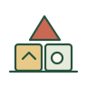
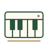

01 / OUR CARE
モンテッソーリ療育
やってみたい、を大切に。
教具に触れ、自分で選び、取り組む時間。日常生活の基礎を、一人ひとりのペースで育みます。
OUR CARE
モンテッソーリ療育・発語リズム療育・ピアノ療育。
一人ひとりの関心やペースを大切にします。

01 / OUR CARE
やってみたい、を大切に。
教具に触れ、自分で選び、取り組む時間。日常生活の基礎を、一人ひとりのペースで育みます。
02 / OUR CARE
ことばを、リズムにのせて。
音楽のリズムを身体で感じながら、楽しくことばに親しむ療育です。

03 / OUR CARE
音を楽しむ。自分を表す。
音楽に親しむ時間を通して、それぞれの「好き」や表現する楽しさを大切にします。
LITTLE DISCOVERIES
教具に触れ、選び、取り組む姿。


ONE STEP AT A TIME
個別療育と小グループの療育を組み合わせ、一人ひとりに合わせた時間を大切にしています。
お子さまのニーズに合わせて個別支援計画を作成し、療育相談を通じてご家庭とともに考えます。
自ら選んだ教具についてスタッフが手本を示し、お子さまが取り組む姿を丁寧に見守ります。
LET’S TALK
お子さまのこと、園での過ごし方。
気になることから、お気軽にご相談ください。